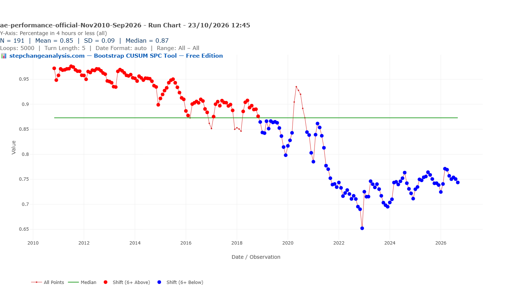
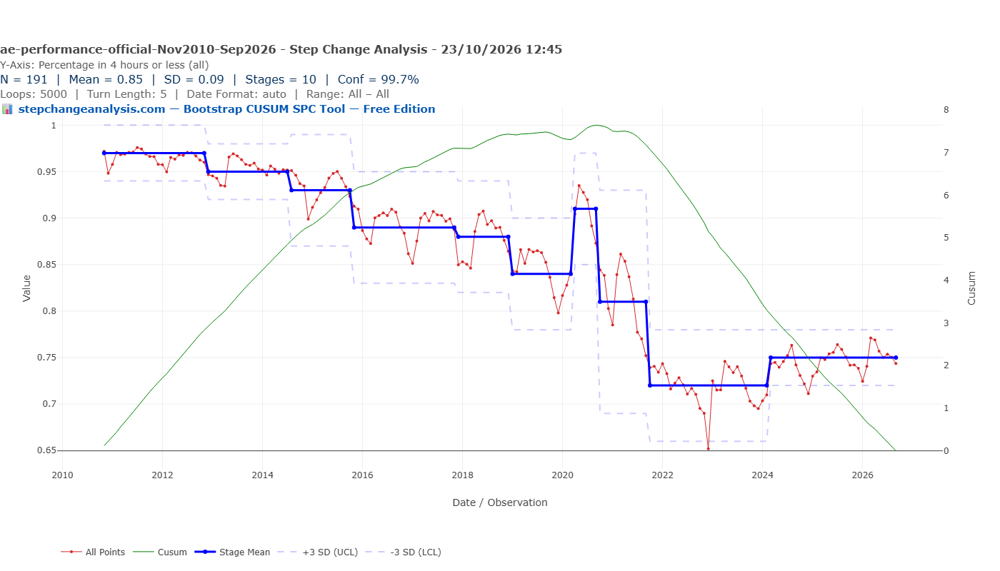

A&E performance was changing. What could we have learned sooner?
Use charts to recognise changes, investigate possible explanations and evaluate improvement—not to jump from a pattern to a cause.
Could we learn more by recognising changes as they emerge, then investigating what was happening locally—rather than trying to explain them years later?
A disappointing month can prompt a familiar explanation: winter pressures, more attendances, staffing shortages or difficulty discharging patients. But one result cannot tell us whether performance is fluctuating, following a seasonal pattern or moving to a different level.
Plotting observations over time gives us a better starting point. The purpose is not to make a chart explain the NHS. It is to help us recognise change, investigate sooner and assess our responses more carefully.
1. Recognise
What is changing in performance?
2. Investigate
What might explain the pattern?
3. Evaluate
Did our intended change help?
On this page
1. Start with what was measured
This example uses “Percentage in 4 hours or less (all)” from the NHS England Monthly A&E Time Series. It measures the proportion of attendances admitted, transferred or discharged within four hours—not simply the proportion first seen within four hours.
“All” covers all A&E types, including urgent treatment centres, minor injury units and walk-in centres. It is not a measure of major emergency departments alone. [1]
Coverage of this example: the CSV contains 191 monthly observations, November 2010–September 2026, extracted directly from the official workbook’s Performance sheet. No missing observations have been filled in. The chart export date is not the final observation date. Values are stored as proportions: 0.88 means 88%.
Data qualifications worth checking
NHS England notes that monthly figures before June 2015 were estimated by apportioning weekly returns. It also reports that fourteen trusts testing alternative urgent-care metrics stopped reporting four-hour performance between May 2019 and May 2023. [1]
These qualifications do not make the series useless, but coverage, definitions and comparability need checking before an apparent shift is attributed to service performance. National averages can also change when the mix of attendances changes.
2. First, make the pattern visible with a run chart
A run chart plots results in time order, helping us see patterns that an overall average can hide. Here, each point represents one month. The green line is the median of the whole series—the middle value when the results are arranged from lowest to highest. It provides a reference for spotting sustained runs above or below it, not a performance target.
The observations show deterioration before COVID, an interruption around the pandemic and substantially lower performance later in the series. That is a reason to investigate—not a diagnosis of why it happened.

COVID: a better percentage, but a different operating situation
A&E attendances fell sharply during the first COVID wave, while the proportion meeting the four-hour measure rose during April and May 2020. Both movements appear in the NHS England workbook. [1]
The rise in the percentage is real as a recorded result. It is not, by itself, evidence that a planned improvement made the service more effective. Fewer attendances, different patient needs and changes in working arrangements are possible contributors. The chart alone cannot separate their effects.
Nor does a better four-hour percentage establish that population health or access to care improved. We would also need to examine who did not attend, whether care was delayed and what happened to patients.
When attendance volume and four-hour performance change together, investigate their relationship. That is a reason to consider demand, capacity and patient mix—not proof that attendance volume explains all the earlier or later deterioration.
A run chart keeps the sequence visible. IHI recommends run charts as a practical tool for observing performance and assessing whether improvement lasts. [2]
What are its limits?
- It does not identify causes or an exact change date. A sustained run is a prompt to look more closely.
- The reference matters. A whole-history median is useful for this retrospective view, but may hide recent local changes. For planned improvement, use an appropriate baseline and agreed rules.
- Patterns need context. Trend, seasonality and neighbouring observations moving together can affect signals. A median resists extreme values; it does not remove these features.
There is no need to dismiss a run chart because another method gives a more detailed fitted picture. The tools serve complementary purposes.
3. Use estimated change points to focus questions
Step-change analysis looks for possible differences between average performance levels. Where the method is suitable, estimated timing and size can help focus investigation.
A change in performance is not the same as a change to the system
On this site, structural change refers to changing how the system or process works—for example, how discharge decisions are made, how teams coordinate or how responsibilities and resources are organised. It need not mean a formal organisational restructuring.
The blue steps indicate possible changes in average performance, with estimates of when those changes began and how large they were. They do not tell us what changed inside or outside the organisation. To understand that, we need to investigate changes in its processes and wider operating conditions—such as demand, access to other services or community support—and whether those changes plausibly explain the results.
A system change may or may not improve results. Equally, results can change because demand or patient mix changes, without a deliberate improvement to the process. The chart helps us investigate and evaluate; it does not identify the system change or establish its cause.
The supplied chart displays ten fitted stages at a 99.7% confidence setting. Implementation checks and the suitability of the method for this series remain under review. The chart is included to explain the method and its limits, not to endorse that stage count or those boundaries.

The CUSUM accumulates departures from a reference average. Small differences that persist can become easier to see. A change may alter its slope without producing a peak or trough. When centred on the whole-series mean, it returns approximately to zero by construction; that return is not evidence of improvement.
What are its limits?
- A fitted step is not necessarily a separate abrupt event. A staircase can approximate a gradual trend, seasonal behaviour or persistent fluctuations.
- Assumptions matter. The bootstrap method used to produce this chart repeatedly shuffles the individual observations into a random order. It compares the CUSUM’s range in these shuffled sequences with that in the observed sequence to assess evidence of a change. Shuffling breaks the original time order. If neighbouring months tend to move together, or there is a seasonal pattern, that comparison may give a misleading confidence assessment.
- Short stages and settings need care. Few observations give less information about a stage. More bootstrap runs reduce random simulation variability; they cannot make unsuitable assumptions fit the data.
- Confidence is not causal certainty. The displayed 99.7% setting is not a 99.7% probability that an intervention worked, nor a guarantee for every fitted boundary.
Neither chart establishes a cause. Neither an upward step nor an absent step is, by itself, a verdict on a policy.
4. A change date is a clue—not an explanation
What was different around that time—and what evidence would help us check the possible explanations?
An enquiry might examine:
- Arriving at A&E: changes in attendance volumes, patient needs or access to other services.
- Moving through hospital: staffing, beds, diagnostics, specialist decisions and coordination between teams.
- Leaving hospital safely: discharge decisions, community support and care availability.
These are possible interacting explanations, not alternatives that the national chart can settle. Their importance can differ between hospitals and over time. The place where delay becomes visible is not necessarily the only place contributing to it.
Check the data first, compare related measures and look for evidence that could contradict the preferred explanation. An event occurring near an estimated boundary is a lead to investigate—not proof.
5. Use bright spots to challenge assumptions
A bright spot is a service, team or period where results appear better despite broadly similar challenges. Examining what is different can suggest ideas worth testing elsewhere—not a ready-made solution to copy without checking the context.
NHS England describes how West Hertfordshire Teaching Hospitals NHS Trust treated corridor care as a whole-hospital problem. Reported actions included visible senior leadership, faster discharge decisions, stronger multidisciplinary working and accountability for long stays. The account reports fewer patients in corridors and shorter emergency-department waits. [3]
This supports examining internal coordination. It does not establish the cause of national deterioration, prove that external constraints do not matter, or provide a controlled evaluation.
Ask what changed in daily work, when it was implemented, whether benefits persisted and what another hospital would need to test. A bright spot should open an investigation, not close it.
For our related articles, see the Watford Bright Spot case study and the Bright Spots guide. These broader pages are also being reviewed to ensure their evidence claims are clearly distinguished from interpretation.
6. A stronger practical approach: monitor locally and prospectively
National figures can hide local changes
The national result combines performance across many services. Improvement in some trusts can offset deterioration in others, leaving little apparent change overall. Changes in which services account for more attendances can also affect the national percentage.
A national chart therefore cannot tell us what is happening in every hospital. Even a trust-wide average can mask differences between sites, departments or patient pathways.
Use national charts for the wider picture and local charts to guide local learning and action. Charting locally can make these differences visible and help teams connect possible changes in performance with what was happening in their own service.
Keep definitions consistent and choose meaningful groups. Avoid splitting the data so finely that small numbers make patterns difficult to interpret.
Plan the evaluation and investigate promptly
National retrospective analysis provides context. For a local improvement team, planning the evaluation before implementation and investigating changes as they emerge is often more useful than reconstructing explanations years later.
For example, when changing discharge arrangements:
- Establish the starting pattern. Check the measure, existing trend and seasonal behaviour.
- Record the prediction first. What should improve, why and over what timescale?
- Record what actually changed. Note implementation dates and whether the new arrangements were consistently used.
- Monitor outcomes and related measures. Check patient flow, safety and whether delays move elsewhere.
- Investigate signals promptly. Records and people’s recollections are more accessible near the event.
- Continue monitoring. Assess whether any benefit persists.
Start with an annotated run chart. Add change-point analysis where its assumptions are suitable and estimated timing would help. Agree monitoring rules in advance: repeatedly rerunning a retrospective test as each observation arrives does not automatically control false alarms.
There may be a delay between taking action and seeing any effect in the measure—for example, while new working practices become established or patients move through the pathway. Once an effect begins, further observations may be needed before a chart signals it. The action date, the start of any effect and the date it is detected are different. Record the expected timescale beforehand; there is no universal delay for either an effect or its detection. Local series may also contain fewer observations or more noise, so local does not automatically mean statistically stronger.
Where feasible, comparison services or a staged introduction can strengthen evaluation. A favourable shift does not establish attribution; no detected shift does not prove no benefit. Slowing a worsening trend can matter even without an upward step.
Use national data to understand the wider pattern. Use local, prospectively planned monitoring to connect evidence with what was actually happening in the service.
7. Right problem. Right intervention. Right measures.
Before declaring an improvement successful—or unsuccessful—ask:
- Right problem: have we understood what is producing the difficulty, rather than only its symptoms?
- Right intervention: does the proposed change address it, and was it implemented?
- Right measures: are we assessing the intended result fairly, allowing appropriate time and checking for harm elsewhere?
The lesson is not that a chart can identify the single cause of worsening A&E performance. It is that changes become more useful to learning when we recognise them, investigate promptly and evaluate our responses carefully.
Make the pattern visible. Ask better questions. Test explanations. Keep learning.
Start with your own question
Plot your observations, record relevant changes and decide what the evidence suggests you should investigate next. Read the limitations above before interpreting fitted steps.
Open the StepChange AnalyzerSources and analysis notes
- NHS England: A&E Attendances and Emergency Admissions. Source series and reporting qualifications. This example uses 191 observations from November 2010–September 2026, extracted from the September 2026 workbook (published 8 October 2026), Performance sheet, date column B and value column K.
- Institute for Healthcare Improvement: Run Chart Tool. Practical use of observations over time.
- NHS England: Watford trust tackled corridor care as a whole-hospital problem. A reported improvement account, not a causal evaluation.
- Taylor: Change-Point Analysis—A Powerful New Tool for Detecting Changes. Method reference; citing it does not validate this implementation or application.
Reproducibility: both supplied exports are dated 23 October 2026 and display N = 191, Loops = 5000 and Turn Length = 5. The step-change export displays Conf = 99.7% and Stages = 10. These are recorded output settings, not an independent validation. A tool version or code hash was not supplied with the exports. Download the source-extracted CSV.
Correction to the earlier article: this version corrects a source-data alignment error: the earlier CSV paired performance values with dates three months too early. Activity starts in August 2010, while Performance starts in November 2010. The new charts use the Performance sheet’s own dates and current official values. This version also replaces definitive stage-count and causal claims with a qualified investigative example. Earlier wording about continuous CUSUM decline, universal detection delays and policy failure should not be relied upon.